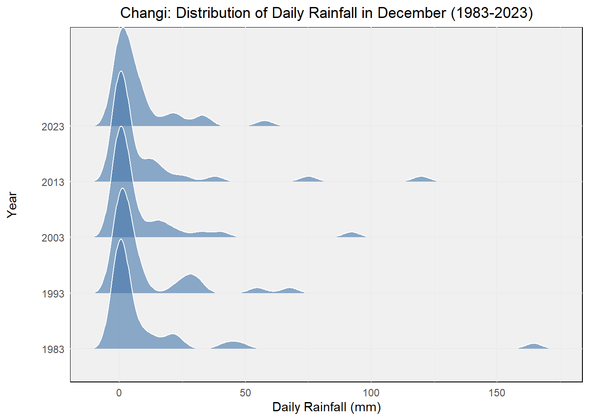
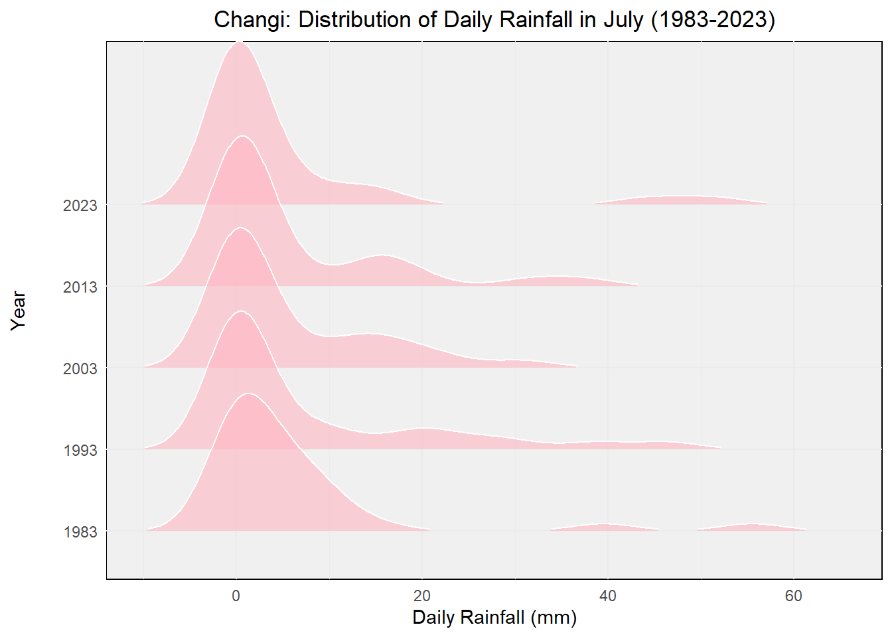

pacman::p_load(cowplot, DT, dplyr, ggridges, ggiraph, ggrepel, ggthemes, gridExtra, ggplot2, gifski, gapminder, gganimate, heatmaply, hrbrthemes, haven, patchwork, plotly, patchwork, readr, tidyverse, viridis)Take-home Exercise 3: Be Weatherwise or Otherwise
1 Overview
1.1 Introduction
The impact of climate change on weather patterns is a growing concern globally, with implications for various sectors including agriculture, infrastructure, and public health.
In this project, we aim to explore historical weather trends in Singapore using data obtained from the Meteorological Service Singapore website. By leveraging visual analytics techniques, we seek to provide insights into rainfall variations over the past four decades (1983, 1993, 2003, 2013, and 2023), with a focus on validating projections regarding temperature increases and changes in wet and dry seasons.
1.2 Objectives
Analyze historical daily rainfall data from selected weather stations in Singapore.
Create data visualizations to illustrate trends and patterns in weather data for the specified months of the chosen years.
Apply interactive techniques to enhance user engagement and facilitate data exploration.
Validate projections regarding changes in wet and dry seasons as stated in the office report.
2 Loading R packages
The original design will then be remade using data visualization design principles and best practices using ggplot2, its extensions, and tidyverse packages.
3 Dataset
The original dataset (historical daily temperature or rainfall data) was downloaded from Meteorological Service Singapore.
Selecting the daily weather records of jul and dec from the years 1983, 1993, 2003, 2013, and 2023, data from the Changi Meteorological Station have been chosen and downloaded for analysis.
4 Data Preparation
4.1 Data Loading and Combination
The code reads data from CSV files corresponding to dec of the years 1983, 1993, 2003, 2013, and 2023, using the ISO-8859-4 and UTF-8 encoding to interpret text data from the files.
Next, the separate data frames are merged together into two data frames called “dec” and “jul” accordingly.
Click to view the code.
data198312 <- read_csv("../../data/DAILYDATA_S24_198312.csv", locale = locale(encoding = "ISO-8859-4"))
data199312 <- read_csv("../../data/DAILYDATA_S24_199312.csv", locale = locale(encoding = "ISO-8859-4"))
data200312 <- read_csv("../../data/DAILYDATA_S24_200312.csv", locale = locale(encoding = "ISO-8859-4"))
data201312 <- read_csv("../../data/DAILYDATA_S24_201312.csv", locale = locale(encoding = "ISO-8859-4"))
data202312 <- read_csv("../../data/DAILYDATA_S24_202312.csv", locale = locale(encoding = "UTF-8"))
dec <- bind_rows(data198312, data199312, data200312, data201312, data202312)
data198307 <- read_csv("../../data/DAILYDATA_S24_198307.csv", locale = locale(encoding = "ISO-8859-4"))
data199307 <- read_csv("../../data/DAILYDATA_S24_199307.csv", locale = locale(encoding = "ISO-8859-4"))
data200307 <- read_csv("../../data/DAILYDATA_S24_200307.csv", locale = locale(encoding = "ISO-8859-4"))
data201307 <- read_csv("../../data/DAILYDATA_S24_201307.csv", locale = locale(encoding = "ISO-8859-4"))
data202307 <- read_csv("../../data/DAILYDATA_S24_202307.csv", locale = locale(encoding = "UTF-8"))
jul <- bind_rows(data198307, data199307, data200307, data201307, data202307)Next step, remove blank data columns.
Finally, save the data for jul and dec to separate RDS files.
Click to view the code.
write_rds(dec_noblank,"data/dec.rds")
write_rds(jul_noblank,"data/jul.rds")Read the combined data and check for missing values
4.2 Data Wrangling
Calculate the differences between the data for July and December.
Click to view the code.
july <- subset(jul, Month == 7)
december <- subset(dec, Month == 12)
july <- july[, !(names(july) %in% "Month")]
december <- december[, !(names(december) %in% "Month")]
diff <- data.frame(
Station = july$Station,
Year = july$Year,
Day = july$Day,
Daily_Rainfall_Total_mm = december$`Daily Rainfall Total (mm)` - july$`Daily Rainfall Total (mm)`,
Mean_Temperature_C = december$`Mean Temperature (°C)` - july$`Mean Temperature (°C)`,
Maximum_Temperature_C = december$`Maximum Temperature (°C)` - july$`Maximum Temperature (°C)`,
Minimum_Temperature_C = december$`Minimum Temperature (°C)` - july$`Minimum Temperature (°C)`,
Mean_Wind_Speed_km_h = december$`Mean Wind Speed (km/h)` - july$`Mean Wind Speed (km/h)`,
Max_Wind_Speed_km_h = december$`Max Wind Speed (km/h)` - july$`Max Wind Speed (km/h)`
)
head(diff)Calculate the average and median rainfall for July and December each year.
jul_ave <- jul %>%
group_by(Year) %>%
summarise(
AverageRainfall = mean(`Daily Rainfall Total (mm)`, na.rm = TRUE))
jul_med <- jul %>%
group_by(Year) %>%
summarise(
MedianRainfall = median(`Daily Rainfall Total (mm)`, na.rm = TRUE))
dec_ave <- dec %>%
group_by(Year) %>%
summarise(
AverageRainfall = mean(`Daily Rainfall Total (mm)`, na.rm = TRUE))
dec_med <- dec %>%
group_by(Year) %>%
summarise(
MedianRainfall = median(`Daily Rainfall Total (mm)`, na.rm = TRUE))5 Data Visualisation
5.1 Visualization for Wet Season and Dry Season
We have selected December to represent the wet season and July to represent the dry season for data presentation.
Using density plots to display the rainfall situation for different months over the past 40 years.
Click to view the code.
ggplot(dec,
aes(x = `Daily Rainfall Total (mm)`,
y = factor(Year))) +
geom_density_ridges(
scale = 2,
rel_min_height = 0.01,
bandwidth = 3.4,
color = "white",
fill = "#4477AA",
alpha = 0.6
) +
labs(
title = "Changi: Distribution of Daily Rainfall in December (1983-2023)",
x = "Daily Rainfall (mm)",
y = "Year"
) +
theme_minimal() +
theme(
plot.title = element_text(hjust = 0.5),
axis.title.y = element_text(margin = margin(r = 20)),
panel.background = element_rect(fill = "#F0F0F0"),
legend.position = "none"
)
Click to view the code.
ggplot(jul,
aes(x = `Daily Rainfall Total (mm)`,
y = factor(Year))) +
geom_density_ridges(
scale = 2,
rel_min_height = 0.01,
bandwidth = 3.4,
color = "white",
fill = "#FFB6C1",
alpha = 0.6
) +
labs(
title = "Changi: Distribution of Daily Rainfall in July (1983-2023)",
x = "Daily Rainfall (mm)",
y = "Year"
) +
theme_minimal() +
theme(
plot.title = element_text(hjust = 0.5),
axis.title.y = element_text(margin = margin(r = 20)),
panel.background = element_rect(fill = "#F0F0F0"),
legend.position = "none"
)
Through these two charts, we can clearly see that both the total rainfall amount and the rainfall frequency are much greater during the rainy season compared to the dry season.
5.2 Enhancing Engagement through Interactive Techniques
Next, we will employ interactive techniques to enrich the user experience of our data visualizations, allowing users to delve deeper into the data. This will facilitate a better understanding of the distinctions between the wet and dry seasons, enabling users to conduct more comprehensive exploration and analysis according to their interests.
Click to view the code.
p_jul <- ggplot(jul, aes(x = Year, y = `Daily Rainfall Total (mm)`)) +
geom_point(aes(color = `Daily Rainfall Total (mm)`, text = paste('Day:', Day)), alpha = 0.7, size = 2) +
geom_line(data = jul_ave, aes(x = Year, y = AverageRainfall),
color = "seagreen3", linetype = "dotted") +
geom_line(data = jul_med, aes(x = Year, y = MedianRainfall),
color = "palevioletred", linetype = "dotted") +
geom_point(data = jul_ave, aes(x = Year, y = AverageRainfall),
color = "seagreen3", size = 1) +
geom_point(data = jul_med, aes(x = Year, y = MedianRainfall),
color = "palevioletred", size = 1) +
labs(title = "Changi: Daily Rainfall in July (1983-2023)",
x = "Year",
y = "Daily Rainfall Total (mm)") +
theme_minimal() +
theme(legend.position = "none") +
scale_x_continuous(breaks = seq(1983, 2023, by = 10)) +
scale_color_gradient(low = "blue", high = "red") +
annotate("text", x = 2000, y = 4, label = "Average", color = "seagreen3") +
annotate("text", x = 2000, y = 1, label = "Median", color = "palevioletred")
ggplotly(p_jul) %>%
layout(hovermode = 'closest') %>%
config(displayModeBar = FALSE)Click to view the code.
p_dec <- ggplot(dec, aes(x = Year, y = `Daily Rainfall Total (mm)`)) +
geom_point(aes(color = `Daily Rainfall Total (mm)`, text = paste('Day:', Day)), alpha = 0.7, size = 2) +
geom_line(data = dec_ave, aes(x = Year, y = AverageRainfall),
color = "seagreen3", linetype = "dotted") +
geom_line(data = dec_med, aes(x = Year, y = MedianRainfall),
color = "palevioletred", linetype = "dotted") +
geom_point(data = dec_ave, aes(x = Year, y = AverageRainfall),
color = "seagreen3", size = 1) +
geom_point(data = dec_med, aes(x = Year, y = MedianRainfall),
color = "palevioletred", size = 1) +
labs(title = "Changi: Daily Rainfall in December (1983-2023)",
x = "Year",
y = "Daily Rainfall Total (mm)") +
theme_minimal() +
theme(legend.position = "none") +
scale_x_continuous(breaks = seq(1983, 2023, by = 10)) +
scale_color_gradient(low = "blue", high = "red") +
annotate("text", x = 2000, y = 15, label = "Average", color = "seagreen3") +
annotate("text", x = 2000, y = -5, label = "Median", color = "palevioletred")
ggplotly(p_dec) %>%
layout(hovermode = 'closest') %>%
config(displayModeBar = FALSE)We then merged the data for July and December, clearly illustrating that July occupies the lower portion while December dominates the upper part. This indicates that, on average, December experiences significantly higher rainfall than July.
Click to view the code.
combined <- bind_rows(
mutate(jul, Month = "July"),
mutate(dec, Month = "December")
)
p_combined <- ggplot(combined, aes(x = Year, y = `Daily Rainfall Total (mm)`, color = Month)) +
geom_point(alpha = 0.7, size = 2) +
labs(title = "Changi: Daily Rainfall (1983-2023)",
x = "Year",
y = "Daily Rainfall Total (mm)") +
theme_minimal() +
theme(legend.position = "bottom") +
scale_color_manual(values = c("July" = "#FFB6C1", "December" = "#4477AA")) +
scale_x_continuous(breaks = seq(1983, 2023, by = 10))
ggplotly(p_combined) %>%
layout(hovermode = 'closest') %>%
config(displayModeBar = FALSE)5.3 Validating Predictions on Seasonal Changes
Following the calculation of the difference in rainfall between the wet and dry seasons, we constructed box plots to illustrate the distribution of these differences across different years.
Each box plot provides an overview of how the rainfall disparity between the two seasons varies annually. The x-axis denotes the years, while the y-axis represents the daily rainfall total difference in millimeters.
Through these box plots, we aim to elucidate the variability in rainfall disparity over the observed years.
Click to view the code.
p_diff_boxplot <- ggplot(data = diff, aes(x = factor(Year), y = Daily_Rainfall_Total_mm)) +
geom_boxplot(width = 0.5, fill = "lightgoldenrod") +
stat_summary(fun = "median", geom = "line", aes(group = 1), color = "indianred", size = 0.8) +
labs(x = "Year", y = "Daily Rainfall Total (mm)", title = "Changi: Difference in Rainfall Between Wet and Dry Seasons") +
theme_classic()
ggplotly(p_diff_boxplot, tooltip = "all")In the above figure, we’ve added lines connecting the medians for each year’s box plot. These lines exhibit an upward trend, indicating an increasing difference in rainfall over the years.
This further supports the earlier prediction that the contrast between the wet months (November to January) and the dry months (February and June to September) is likely to become more pronounced.